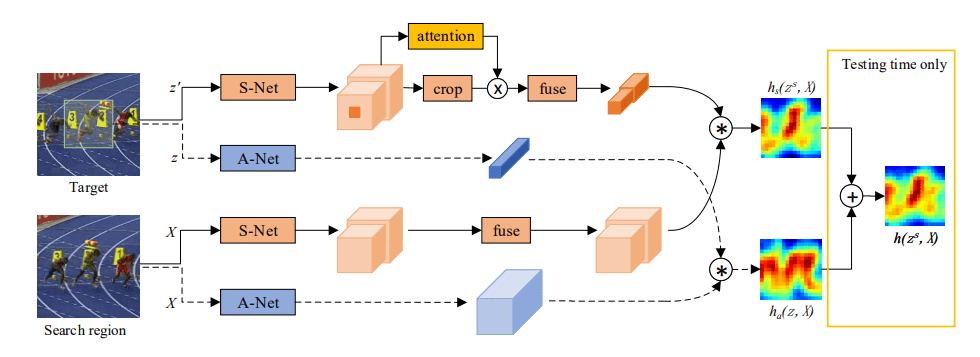

SA-Siam
简介

- 本文基于SiamFC，主要提升SiamFC的泛化能力
- SA-Siam 拥有两个分支
- 外观（Appearance）分支：与SiamFC一致。
- 语义（Semantic）分支：输出特征是high-level，健壮的，不易受外观影响，使模型能够剔除无关的背景，可以补充外观特征。
- 用于语义分支的通道注意力机制：对在特定目标中发挥更重要作用的通道给予更高的权重。
方法
Semantic Branch
对于搜索
输入图像 经过一个CNN（AlexNet），将最后两层的特征拼接以获得不同层次的信息。然后使用 卷积网络 在相同层中融合特征。
对于目标
不直接使用目标模板，而使用以目标模板 为中心，与搜索输入一样大的图像 作为CNN的输入（以获得更多上下文信息）得到 。同时以 来表示 经过裁剪（到以目标模板 为输入的特征大小）的特征。 先将 馈送到通道注意力模块得到通道权重 ，与裁剪后得到的 逐元素相乘，最后使用 进行融合。
Response Map
热力图（响应图）可以写为：
是相关运算。
Appearance Branch
与 SiamFC 一样，表示为
（这里不使用多级特征和添加通道关注是因为高级语义特征非常稀疏，而外观特征则相当密集，无法有效提升性能）
融合两个分支
仅在测试时进行融合，训练时是分别训练的。
超参数平衡两个分支的重要性。
训练
两个分支分别训练
- Appearance 分支从头开始训练。
- Semanitc 分支使用冻结的预训练好的AlexNet（不进行微调，因为使用与A-Net相同的训练模式对S-Net进行微调会导致两个分支同质化），只训练融合模块。
All articles in this blog are licensed under CC BY-NC-SA 4.0 unless stating additionally.